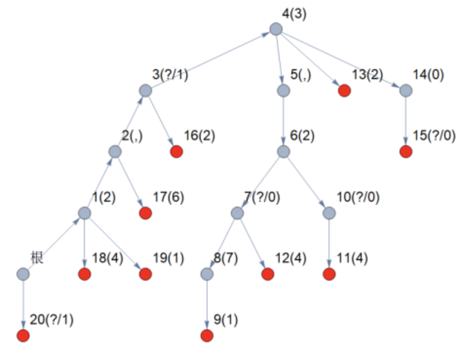

Access Globe 有若干个递增的正整数序列。他把这些正整数序列中的每个正整数的十进制表示（无前导零）依次写了下来，相邻两个整数之间用逗号 , 隔开。Access Globe 把这个序列视为一个由0∼9的数字和逗号 , 组成的字符串，然后用一棵 Trie 树存储这些字符串。你并不需要知道 Trie 树究竟是什么，你只需要知道，Access Globe 得到的 Trie 是一棵以 $0$ 号节点为根的有根树，每条边上都有一个字符，并且从根到每个叶节点的路径上的边上的字符顺次拼接构成的字符串是一个他写下的一个递增的正整数序列。
可爱的小 Tommy 决定篡改这棵 Trie 树。他先将 Trie 上的一些边上的字符删去，然后填上另一些字符。为了不被发现，Tommy 必须保证修改后的 Trie 仍然满足上述性 质，即从根到每个叶节点的路径上的边上的字符顺次拼接构成的字符串是一个递增的正整数序列，且每个正整数无前导零。
现在 Tommy 已经删去了一些边上的字符，请你帮他完成“填上字符”的操作。如果有多解，请输出字典序最小的解。
输入文件包含多组数据，整个文件的第一行是一个整数TT，表示数据组数。对于每一组数据：
第一行包含一个长度为nn的、仅包含 $0$ 到 $9$、,和?的字符串，第 $i$ 个整数表示连接节点 $i$ 的父亲和节点 $i$ 的边上的字符，?表示这条边上的字符已经被删去； 第二行包含 $n$ 个整数，第 $i$ 个整数表示节点 $i$ 的父亲节点 $f_i$，保证 $0≤f_i<i$。
,
?
输出 $T$ 行。对于每组数据，输出一个长度为 $n$ 的字符串，表示字典序最小的填写问号的方式中每个点的字符，第 $i$ 个整数表示节点 $i$ 的字符。
如果不存在任何合法的填写方式，请输出failed。
failed
1 2,?3,2?71?4420?2641? 0 1 2 3 4 5 6 7 8 6 10 7 4 4 14 3 2 1 1 0
2,13,207104420026411
【样例解释】
Tommy 填写的 Trie 如下图，红色的节点为所有叶子节点，注意，根节点在左下方。

【数据范围】
对于20%的数据，$T≤10$，对于每组数据 $n≤80$，?个数不超过8；对于另外10%的数据，$T≤20$，对于每组数据 $n≤80，f_i=i−1$；对于另外20%的数据，$f_i=i−1$；对于另外10%的数据，$n≤80$；对于所有数据，$T≤100$，对于每组数据 $n≤200$。
 Comet OJ
Comet OJ